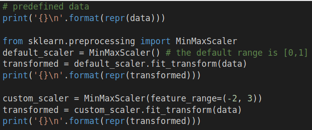

Data Range
Chapter Goals:
• Learn how to compress data values to a specified range
Range scalingApart from standardizing data, we can also scale data by compressing it into a fixed range. One of the biggest use cases for this is compressing data into the range [0, 1]. This allows us to view the data in terms of proportions, or percentages, based on the minimum and maximum values in the data.
The formula for scaling based on a range is a two-step process. For a given data value,
x, we first compute the proportion of the value with respect to the min and max of the data
dmin and
dmax, respectively).
The formula above computes the proportion of the data value,
xprop. Note that this only works if not all the data values are the same (i.e.
dmax ≠
dmin).
We then use the proportion of the value to scale to the specified range, [
rmin,
rmax]. The formula below calculates the new scaled value,
xscale.
~~~~~~~~~~~~~~~~~~~~~~~~~~~~~~~~~
Range compression in scikit-learnThe scikit-learn library provides a variety of
transformers, modules that perform transformations on data. While in the previous chapter we used a single function,
scale, to perform the data standardization, the remaining chapters will focus on using these transformer modules.
The
MinMaxScaler transformer performs the range compression using the previous formula. Specifically, it scales each feature (column) of the data to a given range (where the default range is [0, 1]).
The code below shows how to use the
MinMaxScaler (with the default range and a custom range).
The
MinMaxScaler object contains a function called
fit_transform, which allows it to take in the input data array and then output the scaled data. The function is a combination of the object's
fit and
transform functions, where the former takes in an input data array and the latter transforms a (possibly different) array based on the data from the input to the
fit function.

Now lets run the
fit and
transform functions separately and compare them with the
fit_transform function.
fit takes in an input data array and
transform transforms a (possibly different) array based on the data from the input to the fit function.
The code above scales the
new_data array to the range [0, 1], based on the (column-wise) minimum and maximum values from the
data array in the original code example.
~~~~~~~~~~~~~~~~~~~~~~~~~~~~~~~~~